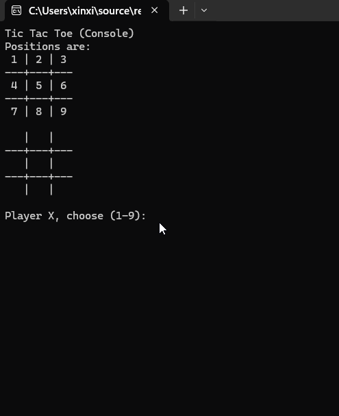

Xinxing Wu
<p class='titlep'> </p> # Project 1: Tic-Tac-Toe <hr> <br> Xinxing Wu
# Outline [<p class="hover-underline-animation">Goal</p>](#/ch1) [<p class="hover-underline-animation">Steps</p>](#/ch2) [<p class="hover-underline-animation">Prior knowledge</p>](#/ch3)
# Outline (Cont.) [<p class="hover-underline-animation">Code</p>](#/ch4) [<p class="hover-underline-animation">Ideas for Improving</p>](#/ch5) [<p class="hover-underline-animation">Testing \& Submissions</p>](#/ch6)
## Goal <div id="shadebox-neon" class="shadebox neon"> Use Week 1–5 & Week 7 skills to build a complete playable game </div>
<p class="definition-rainbow-title">Goal</p>
<div class="definition-pro-Y-container"> <div class="definition-pro-Y-title">Goal</div> <div class="definition-pro-Y-shadebox"> <div style="width: 800px;"></div> - Array-based board - Function-based structure - Loops + validation - <spanGREEN>Win/Draw detection</spanGREEN> </div> </div> </div>
<p class="definition-rainbow-title">Steps</p>
<div class="definition-pro-Y-container"> <div class="definition-pro-Y-title">Steps</div> <div class="definition-pro-Y-shadebox"> <div style="width: 800px;"></div> - Step 1: Board Representation (Week 4 Arrays) <div id="shadebox-glass" class="shadebox glass"> - char board[9]; - initialize: board[i] = ' '; - explain “empty means space” </div> </div> </div> <div class="definition-pro-Y-container"> <div class="definition-pro-Y-title">Steps</div> <div class="definition-pro-Y-shadebox"> <div style="width: 800px;"></div> - Step 2: Printing with a Function (Week 2 Functions/organization) <div id="shadebox-glass" class="shadebox glass"> - drawBoard(board); - show how passing array to function works </div> </div> </div> <div class="definition-pro-Y-container"> <div class="definition-pro-Y-title">Steps</div> <div class="definition-pro-Y-shadebox"> <div style="width: 800px;"></div> - Step 3: Input + Validation (Week 2) <div id="shadebox-glass" class="shadebox glass"> - cin >> pos; - range check: pos < 1 || pos > 9 - convert: idx = pos - 1 - taken spot check: board[idx] != ' ' </div> </div> </div> <div class="definition-pro-Y-container"> <div class="definition-pro-Y-title">Steps</div> <div class="definition-pro-Y-shadebox"> <div style="width: 800px;"></div> - Step 4: Turn Switching (Week 1–2) <div id="shadebox-glass" class="shadebox glass"> - player = (player == 'X') ? 'O' : 'X'; </div> </div> </div> <div class="definition-pro-Y-container"> <div class="definition-pro-Y-title">Steps</div> <div class="definition-pro-Y-shadebox"> <div style="width: 800px;"></div> - Step 5: Win Patterns Table (Week 4 Arrays + Week 2 loops) <div id="shadebox-glass" class="shadebox glass"> - wins[8][3] is a list of winning triples - loop through them: for (int i=0; i<8; i++) </div> </div> </div> <div class="definition-pro-Y-container"> <div class="definition-pro-Y-title">Steps</div> <div class="definition-pro-Y-shadebox"> <div style="width: 800px;"></div> - Step 6: Winner Condition (Week 2 Boolean logic) <div id="shadebox-glass" class="shadebox glass"> - must <spanRED>not</spanRED> be empty: b[a] != ' ' - must match: b[a]==b[c] && b[c]==b[d] </div> </div> </div> <div class="definition-pro-Y-container"> <div class="definition-pro-Y-title">Steps</div> <div class="definition-pro-Y-shadebox"> <div style="width: 800px;"></div> - Step 7: Draw Condition (Week 4 scanning array + Week 2 loop) <div id="shadebox-glass" class="shadebox glass"> - boardFull scans all 9 cells for ' ' </div> </div> </div>
<p class="definition-rainbow-title">Prior knowledge</p>
<div id="rainbow-type">Prior knowledge</div> <div style="display:flex; gap:16px; justify-content:center; flex-wrap:wrap;"> <div class="liquid-glass"> <h2 style="margin:0 0 10px; font-size:30px; line-height:1.1; letter-spacing:0.2px;">Week 1</h2> <hr style="border:0;height:3px;border-radius:999px;background:linear-gradient(90deg,#ff004c,#ffb300,#00e5ff,#7c4dff,#ff004c);background-size:300% 100%;animation:hrflow 3.5s linear infinite;box-shadow:0 0 12px rgba(0,0,0,.25);"> <style>@keyframes hrflow{0%{background-position:0% 50%}100%{background-position:100% 50%}}</style> <p style="margin:0; font-size:22px; line-height:1.55; opacity:0.92;">Printing text and variables (player, pos)</p> </div> <div class="liquid-glass"> <h2 style="margin:0 0 10px; font-size:30px; line-height:1.1; letter-spacing:0.2px;">Week 2</h2> <hr style="border:0;height:3px;border-radius:999px;background:linear-gradient(90deg,#ff004c,#ffb300,#00e5ff,#7c4dff,#ff004c);background-size:300% 100%;animation:hrflow 3.5s linear infinite;box-shadow:0 0 12px rgba(0,0,0,.25);"> <style>@keyframes hrflow{0%{background-position:0% 50%}100%{background-position:100% 50%}}</style> <p style="margin:0; font-size:22px; line-height:1.55; opacity:0.92;">While(true), continue for invalid input</p> </div> <div style="display:flex; gap:16px; justify-content:center; flex-wrap:wrap;"> <div class="liquid-glass"> <h2 style="margin:0 0 10px; font-size:30px; line-height:1.1; letter-spacing:0.2px;">Week 4</h2> <hr style="border:0;height:3px;border-radius:999px;background:linear-gradient(90deg,#ff004c,#ffb300,#00e5ff,#7c4dff,#ff004c);background-size:300% 100%;animation:hrflow 3.5s linear infinite;box-shadow:0 0 12px rgba(0,0,0,.25);"> <style>@keyframes hrflow{0%{background-position:0% 50%}100%{background-position:100% 50%}}</style> <p style="margin:0; font-size:22px; line-height:1.55; opacity:0.92;">Indexing into board[idx]</p> </div> <div class="liquid-glass"> <h2 style="margin:0 0 10px; font-size:30px; line-height:1.1; letter-spacing:0.2px;">Week 7</h2> <hr style="border:0;height:3px;border-radius:999px;background:linear-gradient(90deg,#ff004c,#ffb300,#00e5ff,#7c4dff,#ff004c);background-size:300% 100%;animation:hrflow 3.5s linear infinite;box-shadow:0 0 12px rgba(0,0,0,.25);"> <style>@keyframes hrflow{0%{background-position:0% 50%}100%{background-position:100% 50%}}</style> <p style="margin:0; font-size:22px; line-height:1.55; opacity:0.92;">Trace game loop order: print → input → validate → update</p> </div> </div> </div> <div id="rainbow-type"> Prior knowledge (Cont.)</div> <div class="enum-bigidea-wrapper"> <style> .enum-bigidea-wrapper .big-idea-callout{ margin: 16px 0; padding: 12px 14px; border-radius: 12px; background: rgba(255,255,255,0.04); border: 1px solid rgba(255,255,255,0.12); color: #eaf3ff; line-height: 1.55; font-size: 25px; border-left: 5px solid rgba(132, 255, 170, 0.85); box-shadow: 0 0 0 1px rgba(132, 255, 170, 0.08); /* ✅ align left */ text-align: left; } .enum-bigidea-wrapper .big-idea-callout b{ font-weight: 700; } .enum-bigidea-wrapper .big-idea-callout code{ font-family: Consolas, Monaco, monospace; font-size: 0.95em; padding: 2px 6px; border-radius: 8px; background: rgba(0,0,0,0.25); border: 1px solid rgba(255,255,255,0.10); } </style> <div class="big-idea-callout"> <b>Questions:</b> Why do we do pos-1? </div> <div class="big-idea-callout"> <b>Questions:</b> What happens if player enters a taken spot? </div> <div class="big-idea-callout"> <b>Questions:</b> Where is the board updated? </div> </div>
<p class="definition-rainbow-title">Code</p>
<div id="shadebox"> ### An answer <hr style="border: none; border-top: 1.5px solid cyan;"> ``` #include <iostream> using namespace std; void drawBoard(char b[]) { cout << "\n"; cout << " " << b[0] << " | " << b[1] << " | " << b[2] << "\n"; cout << "---+---+---\n"; cout << " " << b[3] << " | " << b[4] << " | " << b[5] << "\n"; cout << "---+---+---\n"; cout << " " << b[6] << " | " << b[7] << " | " << b[8] << "\n\n"; } char checkWinner(char b[]) { int wins[8][3] = { {0,1,2},{3,4,5},{6,7,8}, // rows {0,3,6},{1,4,7},{2,5,8}, // cols {0,4,8},{2,4,6} // diags }; for (int i = 0; i < 8; i++) { int a = wins[i][0], c = wins[i][1], d = wins[i][2]; if (b[a] != ' ' && b[a] == b[c] && b[c] == b[d]) return b[a]; } return ' '; // no winner } bool boardFull(char b[]) { for (int i = 0; i < 9; i++) { if (b[i] == ' ') return false; } return true; } int main() { char board[9]; for (int i = 0; i < 9; i++) board[i] = ' '; char player = 'X'; cout << "Tic Tac Toe (Console)\n"; cout << "Positions are:\n"; cout << " 1 | 2 | 3\n"; cout << "---+---+---\n"; cout << " 4 | 5 | 6\n"; cout << "---+---+---\n"; cout << " 7 | 8 | 9\n"; while (true) { drawBoard(board); int pos; cout << "Player " << player << ", choose (1-9): "; cin >> pos; if (pos < 1 || pos > 9) { cout << "Invalid. Choose 1-9.\n"; continue; } int idx = pos - 1; if (board[idx] != ' ') { cout << "That spot is taken. Try again.\n"; continue; } board[idx] = player; char winner = checkWinner(board); if (winner != ' ') { drawBoard(board); cout << "Player " << winner << " wins!\n"; break; } if (boardFull(board)) { drawBoard(board); cout << "It's a draw!\n"; break; } player = (player == 'X') ? 'O' : 'X'; } return 0; } ``` </div>
<p class="definition-rainbow-title">Ideas for Improving</p>
<div class="definition-pro-Y-container"> <div class="definition-pro-Y-title">Ideas for Improving</div> <div class="definition-pro-Y-shadebox"> - Input validation for non-numbers <hr style="border: none; border-top: 2px dashed red;"> <div id="shadebox-glass" class="shadebox glass"> If the user types a or something invalid, cin fails and the loop can get stuck. Add cin.clear() and cin.ignore() to recover. </div> </div> </div> <div id="shadebox"> ### Input validation for non-numbers <hr style="border: none; border-top: 1.5px solid cyan;"> ``` /* ========================= STEP 1) Robust input (non-numbers) ========================= Replace your input lines: int pos; cout << "Player " << player << ", choose (1-9): "; cin >> pos; with: */ int pos; cout << "Player " << player << ", choose (1-9): "; if (!(cin >> pos)) { cin.clear(); cin.ignore(10000, '\n'); cout << "Invalid input. Please enter a number 1-9.\n"; continue; } ``` </div> <div class="definition-pro-Y-container"> <div class="definition-pro-Y-title">Ideas for Improving (Cont.)</div> <div class="definition-pro-Y-shadebox"> - Show numbers on empty spots during the game <hr style="border: none; border-top: 2px dashed red;"> <div id="shadebox-glass" class="shadebox glass"> Instead of printing blanks, display 1-9 where the cell is empty. It helps players choose faster. </div> </div> </div> <div id="shadebox"> ### Show numbers on empty spots during the game <hr style="border: none; border-top: 1.5px solid cyan;"> ``` /* ========================= STEP 2) Show numbers on empty spots during game ========================= ADD this helper function (keep your drawBoard as-is if you want), or REPLACE drawBoard with this version (shows 1-9 for empty): */ void drawBoard(char b[]) { cout << "\n"; for (int i = 0; i < 9; i++) { char cell = (b[i] == ' ') ? char('1' + i) : b[i]; cout << " " << cell << " "; if (i % 3 != 2) cout << "|"; if (i % 3 == 2 && i != 8) cout << "\n---+---+---\n"; } cout << "\n\n"; } ``` </div> <div class="definition-pro-Y-container"> <div class="definition-pro-Y-title">Ideas for Improving (Cont.)</div> <div class="definition-pro-Y-shadebox"> - Add “Play again?” loop <hr style="border: none; border-top: 2px dashed red;"> <div id="shadebox-glass" class="shadebox glass"> After win/draw, ask Play again (y/n)? and reset the board without restarting the program. </div> </div> </div> <div id="shadebox"> ### Add “Play again?” loop <hr style="border: none; border-top: 1.5px solid cyan;"> ``` /* ========================= STEP 3) Play again loop ========================= In main(), WRAP your whole single-game logic in a do/while. - ADD before your board init: */ char again = 'y'; do { // (your existing single-game setup goes here) /* - MOVE/KEEP your board initialization INSIDE this loop: */ char board[9]; for (int i = 0; i < 9; i++) board[i] = ' '; char player = 'X'; // (your existing while(true) game loop stays here) cout << "Play again? (y/n): "; cin >> again; } while (again == 'y' || again == 'Y'); ``` </div> <div class="definition-pro-Y-container"> <div class="definition-pro-Y-title">Ideas for Improving (Cont.)</div> <div class="definition-pro-Y-shadebox"> - Track score across rounds <hr style="border: none; border-top: 2px dashed red;"> <div id="shadebox-glass" class="shadebox glass"> Keep int xWins, oWins, draws; and print a small scoreboard after each round. </div> </div> </div> <div id="shadebox"> ### Track score across rounds <hr style="border: none; border-top: 1.5px solid cyan;"> ``` /* ========================= STEP 4) Scoreboard ========================= In main(), ADD before the do/while: */ int xWins = 0, oWins = 0, draws = 0; /* Then, when someone wins, REPLACE your win print block: cout << "Player " << winner << " wins!\n"; with: */ cout << "Player " << winner << " wins!\n"; if (winner == 'X') xWins++; else if (winner == 'O') oWins++; /* When draw, after "It's a draw!", ADD: */ draws++; /* After each round (right before asking Play again), ADD: */ cout << "Score -> X: " << xWins << " O: " << oWins << " Draws: " << draws << "\n"; ``` </div> <div class="definition-pro-Y-container"> <div class="definition-pro-Y-title">Ideas for Improving (Cont.)</div> <div class="definition-pro-Y-shadebox"> - Make small helper functions for clarity <hr style="border: none; border-top: 2px dashed red;"> <div id="shadebox-glass" class="shadebox glass"> Examples: resetBoard(board), isValidMove(board, pos), switchPlayer(player) — makes main() cleaner. </div> </div> </div> <div id="shadebox"> ### Make small helper functions for clarity <hr style="border: none; border-top: 1.5px solid cyan;"> ``` /* ========================= STEP 5) Small helper functions (minimal additions) ========================= ADD these above main() and use them in main(): */ void resetBoard(char b[]) { for (int i = 0; i < 9; i++) b[i] = ' '; } bool isValidMove(char b[], int pos) { if (pos < 1 || pos > 9) return false; int idx = pos - 1; return b[idx] == ' '; } char switchPlayer(char p) { return (p == 'X') ? 'O' : 'X'; } /* Then in main(), REPLACE: for (int i = 0; i < 9; i++) board[i] = ' '; with: */ resetBoard(board); /* And REPLACE your validation blocks with: */ if (pos < 1 || pos > 9) { cout << "Invalid. Choose 1-9.\n"; continue; } if (!isValidMove(board, pos)) { cout << "That spot is taken (or invalid). Try again.\n"; continue; } /* And REPLACE player switch line: player = (player == 'X') ? 'O' : 'X'; with: */ player = switchPlayer(player); ``` </div> <div class="definition-pro-Y-container"> <div class="definition-pro-Y-title">Ideas for Improving (Cont.)</div> <div class="definition-pro-Y-shadebox"> - Use constants instead of “magic numbers” <hr style="border: none; border-top: 2px dashed red;"> <div id="shadebox-glass" class="shadebox glass"> Use const int SIZE = 9; and loop with i < SIZE to improve readability and future changes. </div> </div> </div> <div id="shadebox"> ### Use constants instead of “magic numbers” <hr style="border: none; border-top: 1.5px solid cyan;"> ``` /* ========================= STEP 6) Use constants instead of magic numbers ========================= ADD near top: */ const int SIZE = 9; /* Then REPLACE loops like: for (int i = 0; i < 9; i++) with: */ for (int i = 0; i < SIZE; i++) /* Also in boardFull/checkWinner loops etc. */ ``` </div> <div class="definition-pro-Y-container"> <div class="definition-pro-Y-title">Ideas for Improving (Cont.)</div> <div class="definition-pro-Y-shadebox"> - Add basic AI (optional mode) <hr style="border: none; border-top: 2px dashed red;"> <div id="shadebox-glass" class="shadebox glass"> A super simple computer player: first pick a winning move, else block opponent, else take center, else take any corner, else any spot. </div> </div> </div> <div id="shadebox"> ### Add basic AI (optional mode) <hr style="border: none; border-top: 1.5px solid cyan;"> ``` /* ========================= STEP 7) Basic AI mode (optional) ========================= ADD this helper above main() (very simple "first empty"): */ int computerMove(char b[]) { for (int i = 0; i < 9; i++) { if (b[i] == ' ') return i; // first empty } return -1; } /* In main(), ADD a mode choice (before game loop starts each round): */ int mode; cout << "Choose mode: 1) Player vs Player 2) Player vs Computer : "; cin >> mode; bool vsComputer = (mode == 2); /* Inside your while(true) loop, REPLACE the input part with: */ int idx = -1; if (vsComputer && player == 'O') { idx = computerMove(board); cout << "Computer chooses: " << (idx + 1) << "\n"; } else { int pos; cout << "Player " << player << ", choose (1-9): "; if (!(cin >> pos)) { cin.clear(); cin.ignore(10000, '\n'); cout << "Invalid input. Please enter a number 1-9.\n"; continue; } if (pos < 1 || pos > 9) { cout << "Invalid. Choose 1-9.\n"; continue; } idx = pos - 1; if (board[idx] != ' ') { cout << "That spot is taken. Try again.\n"; continue; } } ``` </div> <div class="definition-pro-Y-container"> <div class="definition-pro-Y-title">Ideas for Improving (Cont.)</div> <div class="definition-pro-Y-shadebox"> - Better UI feedback <hr style="border: none; border-top: 2px dashed red;"> <div id="shadebox-glass" class="shadebox glass"> Print whose turn it is more clearly, and after invalid input, reprint the position guide or the board. </div> </div> </div> <div id="shadebox"> ### Better UI feedback <hr style="border: none; border-top: 1.5px solid cyan;"> ``` /* ========================= STEP 8) Better UI feedback ========================= Right after drawBoard(board); ADD: */ cout << "(Tip: Enter 1-9 based on the board positions.)\n"; /* Or show the positions again after invalid input: */ cout << "Positions:\n"; cout << " 1 | 2 | 3\n"; cout << "---+---+---\n"; cout << " 4 | 5 | 6\n"; cout << "---+---+---\n"; cout << " 7 | 8 | 9\n"; ``` </div> <div class="definition-pro-Y-container"> <div class="definition-pro-Y-title">Ideas for Improving (Cont.)</div> <div class="definition-pro-Y-shadebox"> - Highlight the winning line <hr style="border: none; border-top: 2px dashed red;"> <div id="shadebox-glass" class="shadebox glass"> Modify checkWinner to also return which 3 indices won, then redraw the board with those cells marked (like [X]). </div> </div> </div> <div id="shadebox"> ### Highlight the winning line <hr style="border: none; border-top: 1.5px solid cyan;"> ``` /* ========================= STEP 9) Highlight winning line ========================= UPDATE checkWinner to also output the winning indices. CHANGE signature: */ char checkWinner(char b[], int winLine[3]) { /* INSIDE the win detection, right before return: */ winLine[0] = a; winLine[1] = c; winLine[2] = d; /* At end (no winner): */ winLine[0] = winLine[1] = winLine[2] = -1; return ' '; /* In main(), ADD: */ int winLine[3] = { -1, -1, -1 }; /* And REPLACE: char winner = checkWinner(board); with: */ char winner = checkWinner(board, winLine); /* OPTIONAL: Mark them in output by tweaking drawBoard: - add a parameter int winLine[3] and print brackets for those indices. (Keeping it minimal: you now at least KNOW the winning cells.) */ ``` </div> <div class="definition-pro-Y-container"> <div class="definition-pro-Y-title">Ideas for Improving (Cont.)</div> <div class="definition-pro-Y-shadebox"> - Put game logic into a class (OOP practice) <hr style="border: none; border-top: 2px dashed red;"> <div id="shadebox-glass" class="shadebox glass"> Create a class TicTacToe with board, player, and methods like draw(), makeMove(), winner(), isDraw(). This connects nicely to classes/objects. </div> </div> </div> <div id="shadebox"> ### Put game logic into a class (OOP practice) <hr style="border: none; border-top: 1.5px solid cyan;"> ``` /* ========================= STEP 10) Convert to a class (minimal OOP overlay) ========================= ADD this class above main() (uses your same logic): */ class TicTacToe { public: char board[9]; char player; TicTacToe() { reset(); } void reset() { for (int i = 0; i < 9; i++) board[i] = ' '; player = 'X'; } void draw() { drawBoard(board); } bool makeMove(int pos) { if (pos < 1 || pos > 9) return false; int idx = pos - 1; if (board[idx] != ' ') return false; board[idx] = player; return true; } char winner() { return checkWinner(board); } bool full() { return boardFull(board); } void nextPlayer() { player = (player == 'X') ? 'O' : 'X'; } }; /* Then in main(), instead of raw arrays, you can do: */ TicTacToe game; game.reset(); game.draw(); // game.makeMove(pos); // game.winner(), game.full(), game.nextPlayer() ``` </div>
<p class="definition-rainbow-title">Testing & Submissions</p>
<div class="definition-container"> <div class="definition-title">Testing</div> <div class="definition-shadebox"> - Require 8 win tests + 1 draw test </div> </div> <p></p> <div class="question-container"> <div class="question-title">Submissions</div> <div class="question-shadebox"> - Projet - A small test table of inputs and expected outputs - README.md </div> </div>